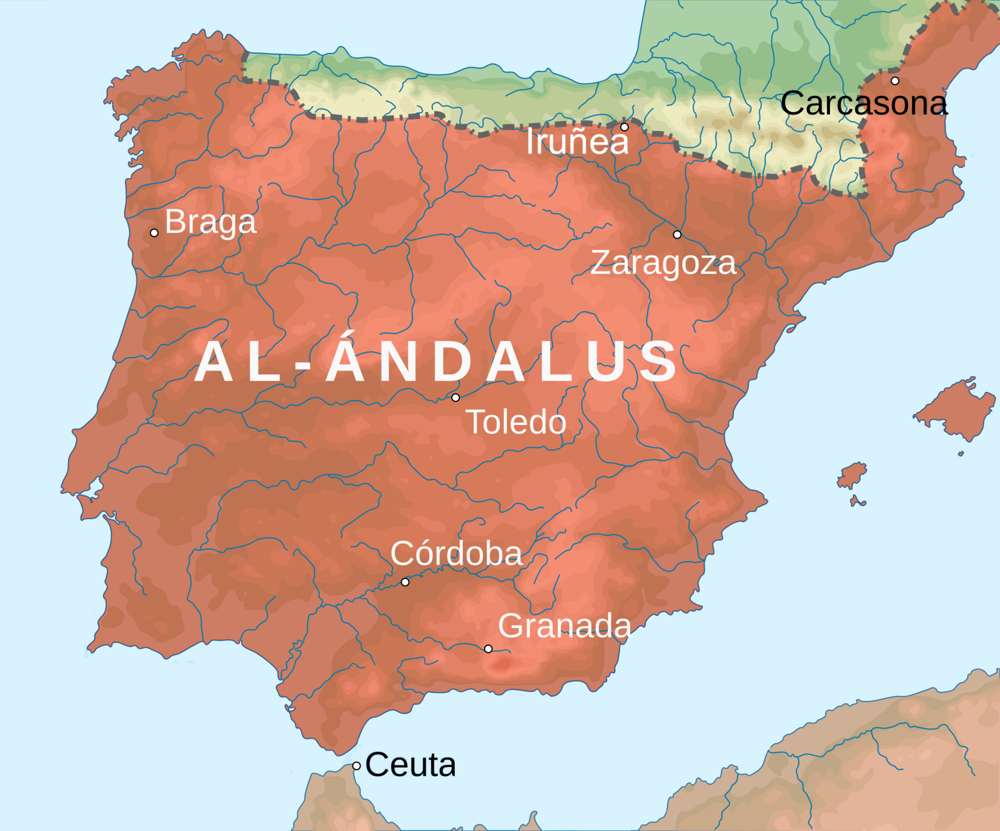
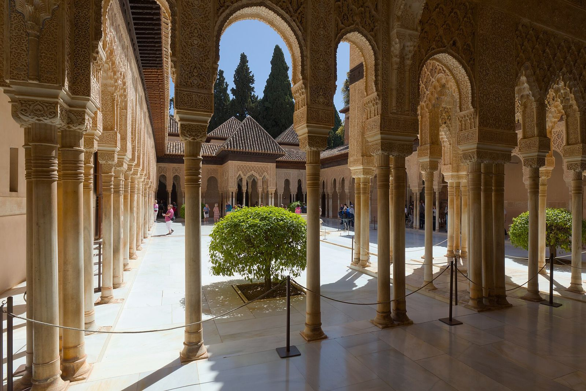
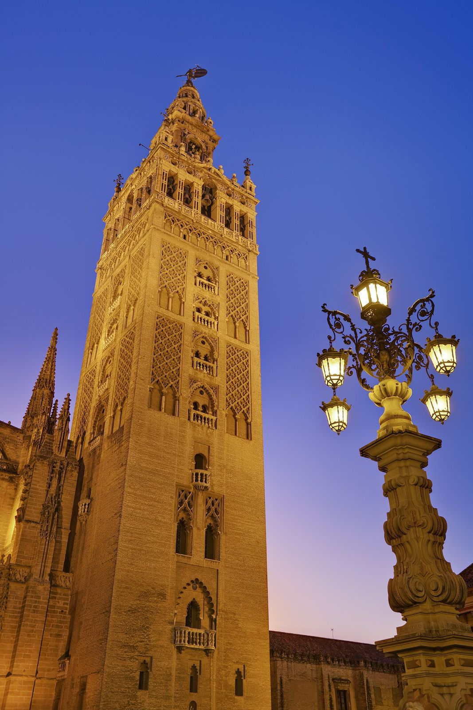
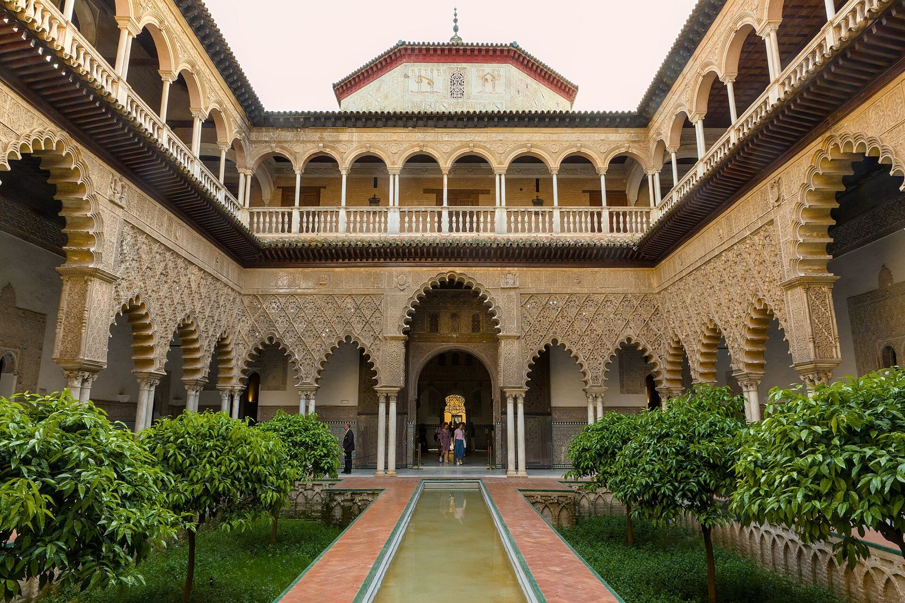
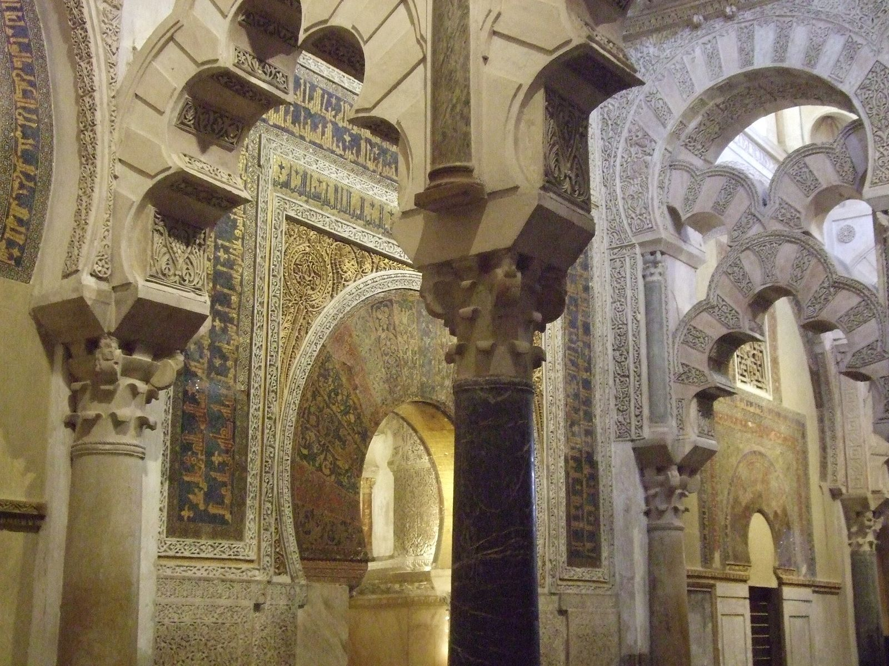
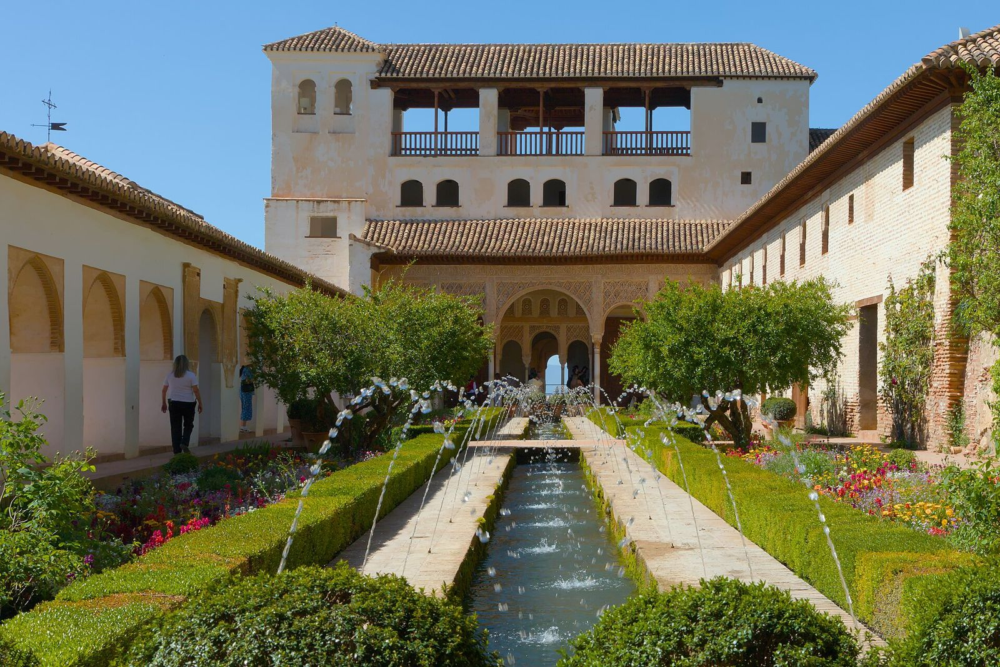
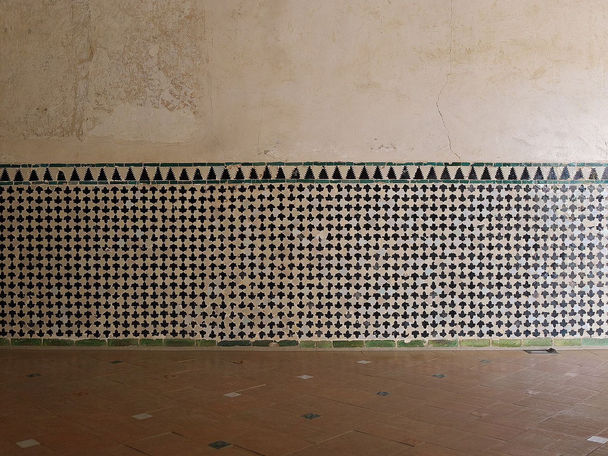
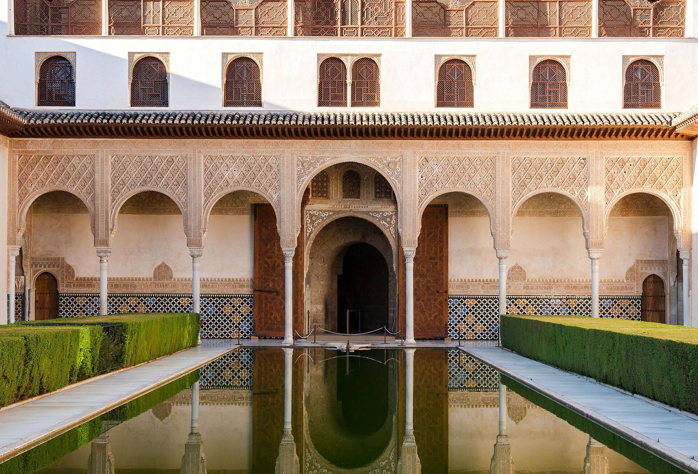
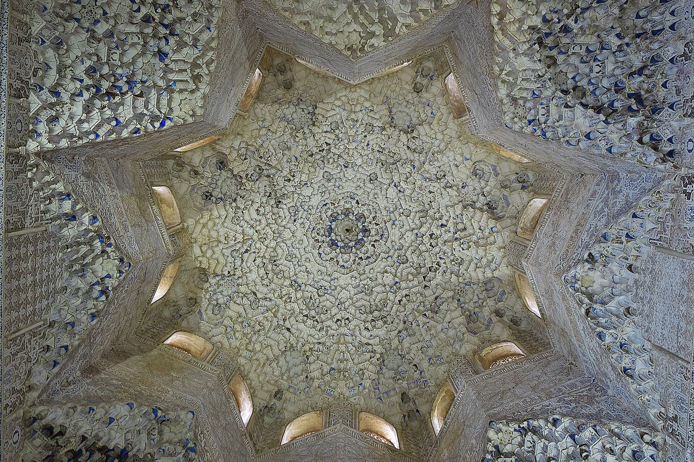
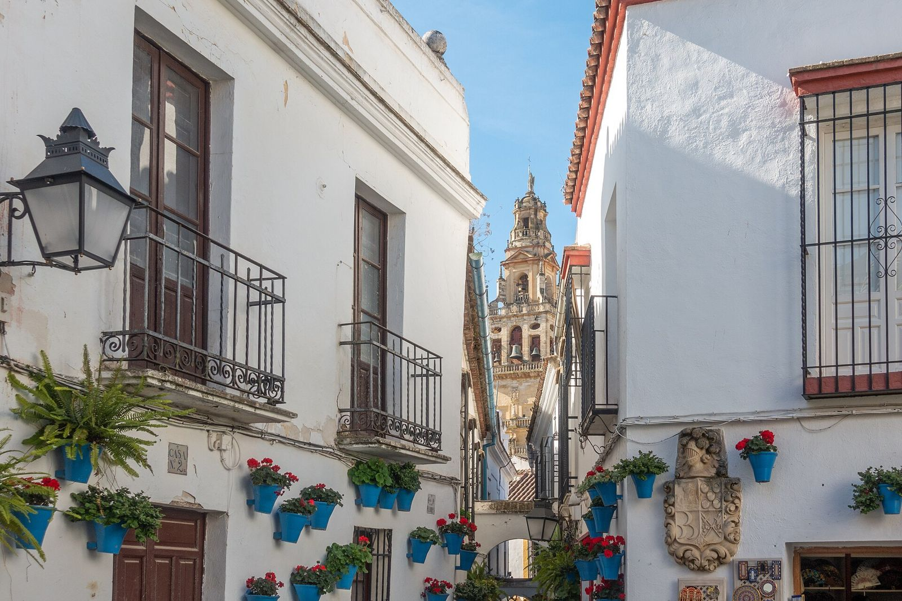

Spuren der Mauren in Andalusien –
damals und heute
[Dein Name] · [Klasse] · [Datum]

„Ihr habt etwas gebaut, was man überall bauen könnte, und dafür etwas zerstört, was einzigartig war.“ soll Kaiser Karl V. beim Anblick der Kathedrale gesagt haben
arab. القلعة الحمراء al-qalʿa al-ḥamrāʾ, „die rote Burg“



→ Die Sieger übernehmen den Stil der Besiegten: Maurische Kunst galt als Luxus.

Bogen, der unten wieder enger wird, oft rot-weiß gestreift

Innenhof mit Brunnen, Becken und Pflanzen, kühl und privat

Fliesenmosaik aus vielen kleinen, geometrisch geschnittenen Teilen

Ranken, Sterne und Schrift in Stuck, aber keine Menschen oder Tiere

„Stalaktiten“-Gewölbe aus Tausenden kleinen Waben
Fotos: Alvaro.vinuela.carnicero (CC BY-SA 4.0) · Benjamin Smith (CC BY-SA 4.0) · Jl FilpoC (CC BY 4.0) · Jebulon (CC0) · José Luis Filpo Cabana (CC BY 3.0)
Im Spanischen stammen rund 4.000 Wörter aus dem Arabischen.

Im 10. Jh. war Córdoba eine der größten Städte Europas. Die Bibliothek des Kalifen al-Hakam II. soll rund 400.000 Bände gehabt haben.
Mezquita, Alhambra, Giralda, Hufeisenbögen, Fliesen und Patios
ojalá, aceite, Guadalquivir und alles mit „al-“
Orangen, Reis, Safran, Mandelgebäck und Bewässerung bis heute
Ziffern, Algebra, Medizin und Philosophie
↓ Bildnachweise auf der nächsten Folie (Pfeil nach unten)
Links zu allen Originaldateien und Lizenzen: bilder/BILDNACHWEIS.md. Lizenztexte: creativecommons.org/licenses